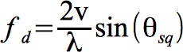

ANSI-C program: sbi_filt.c
NAME
sbi_filt Azimuth filtering of SLC data to support
split-beam interferometry to measure azimuth offsets
SYNOPSIS
sbi_filt <SLC-1> <SLC1_par>
<SLC2R_par> <SLCf> <SLCf_par> <SLCb>
<SLCb_par> <norm_sq> [iwflg]
| <SLC-1> | (input) SLC-1, reference geometry (fcomplex or scomplex format) |
| <SLC1_par> | (input) SLC parameter file of SLC-1 |
| <SLC2R_par> | (input) SLC2 ISP image parameter file for the
co-registered image of the interferometric pair, used to
determine azimuth common-band for each output SLC (enter -
for none) |
| <SLCf> | (output) single-look complex image (forward-looking,
fcomplex format) |
| <SLCf_par> | (output) SLC parameter file (forward-looking) |
| <SLCb> | (output) single-look complex image (backward-looking, fcomplex format) |
| <SLCb_par> | (output) SLC parameter file (backward-looking) |
| <norm_sq> | squint between beams as a fraction of the azimuth spectrum width (default: 0.5) |
| [iwflg] | inverse weighting flag: 0: no compensation for azimuth spectrum weighting 1: compensate for the azimuth spectrum weighting (default) |
EXAMPLE
sbi_filt 19991020.rslc 19991020.rslc.par 19991020.rslc.par
19991020f.rslc 19991020f.rslc.par 19991020b.rslc
19991020b.rslc.par .5 1
The input SLC image is filtered to produce 2 SLC images,
19991020f.rslc is squinted forward and 19991020b.rslc is squinted
backward.
DESCRIPTION
sbi_filt is used to
filter single look complex (SLC) SAR images, creating two SLC
images with different squint angles, one looking foreward and the
other backward. An interferometric pair of SLC images
processed in this way can then be used to create two
interferograms, with the first interferogram from the
forward-squinted beam and the second from the backward-squinted
beam. The difference in phase of these two interferograms can be
shown to be related to the along-track (azimuthal) displacement
as described by Bechor and Zebker (2006).
The total azimuth spectral width of the SLC is determined by the radar along-track sample rate called the pulse repetition frequency or PRF. The squint of the beam is determined by the radar orientation and latitude. The expression for the doppler centroid as a function of squint angle relative to look vector perpendicular to the velocity is given by:

The optimum separation between
the synthesized beams is approximately 0.6 times the antenna
beamwidth. This is equivalent to a difference of the doppler
centroid of the two beams of 1/2 PRF.The filters are specified by
the center frequency and bandwidth. The norm_sq command line parameter
specifies the frequency separation of the center frequencies of
the two filters as a fraction of the PRF. The filter bandwidth is
calculated such that it is the maximum possible within the
processing bandwidth and is symmetrical with respect to the
chosen center frequency. The processing bandwidth of the SLC is
the fraction of the PRF bandwidth used to produce the SLC image.
Usually the processing bandwidth is in the range of 0.8 to 0.9
times the PRF in order to reduce azimuth ambiguities.
An azimuth windowing function is usually applied to the SAR radar data in order to reduce azimuthal sidelobes. The program has the option to apply an inverse weighting function of the spectrum that increases the available bandwidth and resolution. Due to the reduced bandwidth of the squinted images, this option significantly improves the interferometric correlation of the interferograms produced from the split-beam SLC data.
The output SLC data are in floating point complex (fcomplex) format, even if the input SLC images are short complex (scomplex) format. The output filtered SLC data are exactly coregistered with the input SLC. The doppler polynomial information is updated to reflect the new doppler centroid of the filtered data. This information is used by sbi_offset to convert the interferometric phase of the split-beam interferogram into along-track displacement.
Bechor, N., H. Zebker,
"Measuring two-dimensional movements using a single INSAR pair",
Geophsical Resarch Letters, Vol. 33, L16133, 2006,
doi:10.1029/2006GL026883
SEE ALSO
typedef_ISP.h, SLC_par, OFF_par,
sbi_offset